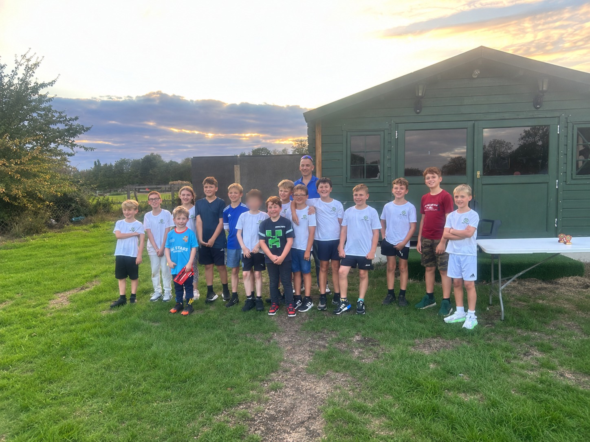

Sutton Cricket Club
Junior Cricket
A welcoming pathway from a child’s first experience of cricket through to junior matches and senior cricket.
Ages 5–8
All Stars
Fun introductory cricket.
details to be confirmedAges 8–12Softball Cricket
Batting, bowling, fielding and game skills.
details to be confirmedJunior match cricketU14s
Training and matches with a pathway towards senior cricket.
details to be confirmedJunior Cricket · 2026
Our junior teams


Looking ahead
Interested in junior cricket in ?
We welcome new and returning young players. Register your interest with the club and we’ll share programme dates, fees and joining details when they are confirmed.
Safeguarding
Junior cricket at Sutton
For safeguarding contacts and any questions about junior cricket at Sutton, please contact the club.